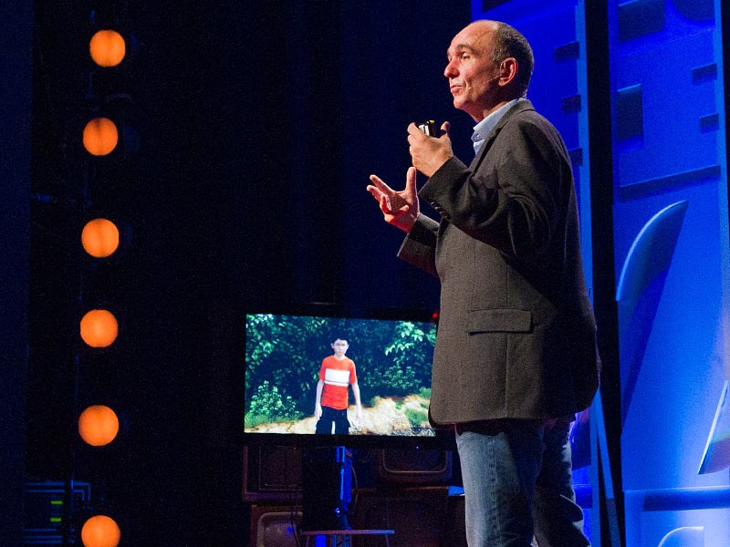

In October 2008, Microsoft released Lionhead's Fable 2 to critical and commercial acclaim. At a launch party an emotional Peter Molyneux held aloft glowing reviews and praised the exhausted team of developers who had spent the previous four years pouring everything they had into the game. Fable 2 would go on to win a BAFTA and become the best-selling role-playing game for the Xbox 360. Lionhead was on top of the world.

Seven-and-a-half years later, Lionhead's 100 or so staff were called to its in-house cafe for a meeting. There, Hanno Lemke, General Manager of Microsoft Studios Europe, announced that Fable Legends was cancelled and Lionhead would close. The famed studio Peter Molyneux co-founded nearly 20 years ago was dead.
The inside story of how Lionhead rose and fell is difficult but also important. Those who worked there describe a studio high on the fumes of furious creativity, a place where mind-numbing failure would often accompany agenda-setting success. They describe a fiercely British culture that benefited - and suffered - from an American overlord hell bent on winning the console war. And they describe a studio created in the image of a man who inspires as much as he frustrates. It's a complicated story. But it's one worth telling.
Lionhead was co-founded in 1997 by Peter Molyneux, Mark Webley, Tim Rance and Steve Jackson, but it was conceived earlier, while Molyneux was at Bullfrog, the ground-breaking PC game maker of Populous, Syndicate and Dungeon Keeper. Molyneux had sold Bullfrog to EA and made millions from the deal. Now working under the heel of an American owner, Molyneux longed for creative freedom once again.
The plan was to call the new venture Red Eye, because, as Mark Webley recalls, Peter and Tim had just returned from a gruelling travel stint. "It was pretty ghastly," he says.
Red Eye it would be as UK video game magazine Edge prepared to visit the new studio and interview the team. Then, Molyneux and his co-founders discovered tens of thousands of companies were already using the name. They panicked.
Webley had named his hamster Lionhead because of its huge neck and because it looked a bit like a chap who used to pop up at the local pub who had "ridiculous" blonde curly hair. Molyneux's then girlfriend suggested Lionhead as the name for the studio. It stuck. "As soon as we called the company Lionhead, my hamster died," Webley says. "It was a death wish."
The idea for Lionhead was that it would focus on making high quality games, as Bullfrog had, but avoid falling into the trap of growing too large. And Molyneux hired well. Developers who joined him during the early days of Lionhead include Demis Hassabis, the AI genius whose DeepMind tech recently beat one of the highest-ranking Go players in the world; Mark Healey and Alex Evans, who would later leave Lionhead to co-found LittleBigPlanet maker Media Molecule; and Jonty Barnes, who now leads production at Destiny developer Bungie.

Webley's hamster, Lionhead.
As part of Molyneux and Webley's severance deal with EA, the pair had agreed to give the publisher first refusal on its first game, whatever it turned out to be. It turned out to be a god game called Black & White.
Work began in the annex of Bargate House, Molyneux's mansion in Elstead. It was a room large enough to house just a handful of people, so it didn't take long before the development team outgrew the space. Molyneux sought an office in the Surrey Research Park in Guildford, a place somewhat unaffectionately dubbed Teletubby Land because of its man-made green hills. In February 1998 Lionhead found an office on Frederick Sanger Road and moved in. The Black & White development team swelled to 25.
Black & White's development was "chaotic," Charlton Edwards, who spent time at Lionhead in 1999 as a work experience student before coming back in 2002 to work full-time, says.
Edwards had dreamed of working at Lionhead, the studio founded by his hero, Peter Molyneux. "It was like being in Disneyland. I was wide-eyed in wonder. I remember seeing the animators making the giant cow, just agog at it all."
There were no producers, he says, or schedules, or anything that bore even a passing resemblance to organisation or planning. "They just seemed to be making things up as they went on," he says. "But it was a really creative atmosphere."
The make it up as you go along approach extended to Lionhead's first visit to E3 in 1998. Then, E3 was in Atlanta, not Los Angeles. Lionhead had hired a small unit in what was dubbed "the loser's hall". All Lionhead had of Black & White then were some "horrible" sprites, Mark Webley remembers, a couple of screenshots, a wireframe test bed and Molyneux's notebook.
But because it was the next game from Peter Molyneux, the founder of Bullfrog and the creator of Populous, people came in their droves. Cathy Campos, who worked as Peter's publicist for many years, remembers Molyneux spinning these screenshots, the wireframe test bed and his notebook out into a 20 minute presentation. At the end Peter would say, "and there's so much more I've got to tell you". "And I would say," Campos recalls, " 'but you're not going to do it today. Thank you very much and goodbye.' And I'd see the journalists out. But of course, basically, we had nothing more to say. That was the script, but we came away with a whole load of press coverage, and that set us up with Black & White."
People who worked on Black & White remember it fondly, despite the development consuming their lives. Lionhead was a boys club, Campos the only woman connected with its creation. And as a boys club made up largely of young men, Lionhead saw late nights filled with hard work and hard play. They would drink cans of coke and smoke cigarettes while sat at desks covered in cold, leftover pizza.
"Everyone got on," Andy Robson, who ran Lionhead testing, recalls. "It was a great atmosphere. It was like a family."
If Lionhead was a family, Molyneux was its father, sat at the head of the table. In his care: 20-or so unruly boys who would often get into trouble. Lionhead, really, was a continuation of the culture and development ethic of Bullfrog. In fact, the idea for Black & White came in part from an event that happened at Bullfrog, the infamous Tamagotchi incident.
At one point while working at Bullfrog, Peter Molyneux wore a Tamagotchi around his neck. He was head over heels in love with it. "He was a grown man," Robson says. "I was like, what the fuck's that about?
"I tell you what, if I ever see that thing lying on your desk, I'll fucking kill it. That's what I said to him. I'll fucking kill it."
One day, Robson, who Molyneux jokingly refers to as an "absolute bastard", spotted the Tamagotchi lying on the Lionhead boss's desk, alone and exposed. He dropped it in a cup of tea and left it there.
"I went into mourning about this," Molyneux remembers. "And that's when I thought, god, if I really feel that emotionally attached to this little bit of plastic, how much more can we do with that?"
The pranks continued as development inched forward with no end in sight. At one point, the mayor of Guildford called the studio to arrange a visit. Molyneux agreed, but the team decided to take the piss out of the mayor. Mark Healey had stuck two old wires into an old woollen glove and popped the other ends of the wires into the floppy disk drive on his computer.
The mayor of Guildford watched Healey play the game while wearing the glove, and thought it was the movement of the glove that controlled Black & White's famous on-screen hand. Healey's other hand, hidden from view, was the one moving the mouse. "The mayor of Guildford is going, wow, that's amazing! As if it was some kind of early VR thing," Molyneux says. "Poor guy. We really did take the piss out of him."

Black & White, hugely ambitious and slightly fractured, laid the foundation for Lionhead when it launched in 2001.
Robson remembers a bet between tester Joe Borthwick and Molyneux about a crash. Molyneux bet Joe that if he couldn't find and reproduce this crash, he'd have to attend the Black & White launch party dressed up as a woman. He never found the crash, and so, in 2001, at the Black & White launch party in Quaglino's in central London, Borthwick dressed as a woman.
"There were days there when we had a good laugh," Robson says. "We used to have little football matches while we were waiting for builds, three o'clock in the morning in the car park at Lionhead."
And the takeaways. The many, many takeaways. Lionhead staff who worked late would be entitled to a takeaway dinner at the company's expense. Every night was a late work night, it seemed. And so there was takeaway after takeaway after takeaway.
"I used to go home and my missus used to go to me, do you want a takeaway?" Robson says. "I was like, do you know what? No, I don't want a takeaway. I've been eating them for about three years."
The pranks were in part a release, an escape from the intensity of the relentless work. During one particularly brutal nine-month period, the Black & White team worked every single day, each for at least 15 hours.
"There was no life," Molyneux remembers. "If I wasn't at the office then I was sleeping.
"I know a lot of people would say, this is crunch. But this was a real work of passion. It wasn't a work where you told people to come in. We really felt we were making something that never existed before. Everybody was totally up for it.
"It was hard for some people because they had families. At that time I wasn't married or anything. In fact I only met my wife just as Black & White finished. It was intense. But it was intensely creative. I don't think many of the team who were there would look back and regret the amount of hours they spent on it. It just felt like we were making something that never existed before, and that was a fantastic thing."
Expectation for Black & White was immense. The PC game community clamoured for information and pored over Peter's press statements. Fans would turn up at the office and refuse to leave until the game came out. Years passed, and EA began to ask difficult questions. Crunch continued until Black & White finally launched in 2001, four years after work had began in Peter's annex. It was a huge success, and enjoyed critical acclaim. All the blood, sweat and tears had paid off: Lionhead's first game was a hit.
Then, Lionhead made what Molyneux calls "a bad decision", although that seems like a harsh verdict given the game the bad decision spawned. Lionhead set up a satellite studio system where it would work with other independent developers to help them sign deals with publishers in exchange for equity in the company. The two studios Lionhead signed up were Big Blue Box, which at the time was making an ambitious open world role-playing game codenamed Project Ego, and Intrepid, which was making a caveman survival game called B.C.
Meanwhile, Lionhead began work on The Movies and Black & White 2, expanding its office space to consume the top floor of Surrey Research Park's One Occam Court. With the expansion came an increased headcount. "What was 30 brilliant genius people, over the course of a year or so after the release of Black & White, expanded up to 100 people," Molyneux says. "That was a big mistake. We should have stayed small and focused rather than get big and diluted."
Fable is best-known for being a Lionhead game with Peter Molyneux at the fore, but it is the creation of Dene and Simon Carter, who had worked at Bullfrog before setting up their own studio, Big Blue Box, in Godalming, Surrey.
After signing with Lionhead's satellite scheme, Big Blue Box spent four years mostly independently working on what would eventually become Fable. During that time Microsoft, itself planning to launch a video game console called Xbox, fell in love with the game.
Specifically, Ed Fries, one of the co-creators of the original Xbox, fell in love with Fable. Microsoft needed a role-playing game for Xbox, and Fable fit the bill. Molyneux, the superstar designer of many a developer's favourite game, was a huge draw. "I remember being excited to meet Peter before Xbox because of his history," Fries says. "He's a programmer. I'm an old programmer, too."
Shane Kim, who ran Microsoft Game Studios at the time, was also involved with Fable in its early days. "You can't underestimate the attractiveness of working with Peter," he says. "He had so much cache. He had such a following. That brought instantaneous credibility to the platform. We were pretty enthralled with the concept of Fable, the design and the promise it held of being able to become a tentpole franchise. I think to an extent that played out."
Inside Big Blue Box, there was a buzz of excitement. "A whole troupe of them came to see Fable," John McCormack, who went on to become Fable art director, recalls.
"When they walked into the Godalming office they were going, this game looks amazing. Where's Peter? Peter didn't work there. They thought it was Peter's game, but it wasn't. They got a bit nervous at that point because they were going, this game doesn't come with the calibre of Peter. I thought this was Peter's game. We were like, no. Peter's working on another game in Guildford."

Both Ed Fries and Shane Kim say they were aware of Lionhead's satellite studio scheme and that it was Big Blue Box that was developing the game. But both believed Fable would still end up very much a Peter Molyneux game, or, as Shane Kim puts it, "Peter's fingerprints would be all over it."
Microsoft decided to back Fable and publish the game. That effectively funded the project with a standard milestone-based royalty deal. Anticipation among Lionhead and Peter's followers - and Microsoft executives - grew.
Simon Carter remembers Lionhead's first E3 demoing Fable for Xbox.
"We arrived in LA, horribly jetlagged, and went to the convention centre to set up for demoing. It seemed that nobody at Microsoft knew we were coming, and Dene and I got ushered into a tiny broom cupboard right next to a giant bass speaker on the Microsoft stand.
"We spent the first day demoing Fable to journalists, desperately trying to time what we were saying against the deafening bass line of Halo. Arriving the next day, we found we'd been nominated for 'Best of Show', and Microsoft had moved us to a much bigger, much quieter room with fancy doughnuts. Fancy doughnuts! Life was good."
But a little bit before Fable was ready to ship, a couple of things happened that changed the course of Big Blue Box's - and Lionhead's - fate forever.
Lionhead had hoped to float on the stock market. In fact, it had spent a great deal of money trying to make that happen (those close to the effort now bemoan bad advice from financial experts). As part of this plan, Lionhead wanted as many "properties" as possible, so bought Big Blue Box and Intrepid.
The plan to float collapsed as the stock market crumbled post-9/11. Lionhead, in desperate need of money to fuel the development of some five games for a raft of different publishers, secured investment from venture capitalists.
Fable, meanwhile, had grown more ambitious than anybody had thought. So the decision was taken to merge the core Fable team at Big Blue Box with a chunk of Lionhead to get the game finished. The mysterious Project Dimitri, which the core Black & White development team had moved onto, was dumped. Fable moved in.
"Just before we merged there was the realisation that Fable was going to be... just enormous," Dene Carter explains.
"It was increasingly obvious that the closely-knit 30-man team Simon, Ian Lovett and I had built just weren't going to be able to finish something of the scope and scale of what was planned without considerable help from the Lionhead core team.
"Microsoft had been very patient, and although Big Blue Box had a really solid alpha (combat largely finished, nascent villager AI and interactions present), building all the RPG trappings on top was going to take organisational effort never before seen in Bullfrog, Big Blue Box or Lionhead.
"Once the 'we have to release this blasted thing' clock started ticking, it was a question of grabbing as many of the Lionhead core guys as possible in an attempt to finish it.
"I think the idea that we were supposed to finish an RPG with the team size we had was - in retrospect - hilarious."
It's at this point that the Carters and others who worked at Big Blue Box got a real sense of the Lionhead culture, and for some there was a clash.
"The merging of Big Blue Box and Lionhead was difficult," Dene Carter says.
"There were some guys at Lionhead central who really didn't want to work on 'someone else's game'. They wanted to do something more 'Lionhead-ey' - Black & White 3 or The Movies 2, or something more obviously avant-garde.
"On the other hand, there were many others who leapt in with both feet, and loved the idea of working on a new RPG, regardless of whose world it was. Those guys saved our proverbial bacon, and most stuck with the franchise up until the recent announcement."
As Fable development shot through the arrival of the new millennium, its creators neared exhaustion. "We were like, for fuck's sake, would this game please just end?" Glaswegian John McCormack, who moved over to Lionhead alongside others from Big Blue Box, says.
Lionhead's culture was a blessing and a curse. The freedom to experiment, coupled with a lack of structure, or even design documents, meant Fable was packed with interesting features but lacked cohesion. It was an interesting sandbox, but it was a role-playing without a story. It was a giant world with hundreds of fantastic creatures and characters, but nothing to tie it together.
"If you know Peter's games, they don't do story," McCormack says. "They're simulation. They're god games. They're sandboxes. So none of the guys involved in the development of Fable knew how to do that. And that's why it was slipping. They were trying to put all these bits together and they didn't know how to do it. That went on for a long time."
Some had grown frustrated by the seemingly never-ending development. When Fable was first touted, it looked spectacular. But as time wore on its visuals began to show their age as other games caught it up.
"The art was ready to go at the start of the Xbox's life," McCormack laments. "The engine was done. It was looking great. And we were like, we are the best-looking game out there.
"And then we had to wait three years for the gameplay and the story to catch up, which was frustrating for everybody, because you're watching a whole load of other games come out and catch up.
"By the time it shipped, everything had passed it,"
Most of the people interviewed for this feature who worked on Fable credit Microsoft with saving the project. The company did not interfere with the design of the game. Rather, it offered support, resources and production assistance.
"We got proper resources," McCormack remembers. "We went from a team of about 15 in Godalming, to a team of about 90. Lionhead just went, this is the game, and Microsoft went, here's the money, and it just went, boof."

Microsoft's support helped save Fable - even if its marketing department perhaps didn't quite get the game's unique prospect.
After Big Blue Box moved over to Lionhead, Microsoft sent a crack team of engineers and a couple of producers over to help with development. The tech people focused on getting Fable running well on the Xbox. Lionhead had built the game on powerful PCs, but struggled to get it running on the console at a decent framerate.
This engineering hit squad worked day and night, McCormack recalls. "It was partly our fault, but also the Xbox hardware was tricky. And it kept shifting spec, because we were early adopters."
Microsoft advised Lionhead to hire producers who would organise the chaos. Louise Murray, n�e Copley, is credited by more than a few as having played a key role in the launch of Fable. Without her help as a producer, the people say, Fable would have died a horrible death.
Murray was good for Fable because she seemed to be the only person at Lionhead Peter Molyneux listened to.
"When Louise came in, she was a bit hardline," McCormack remembers. "And as was typical of the game industry at that time - nobody really knew how to talk to a woman. Peter had no idea how to speak to her. He would make inappropriate jokes as if he was in a room full of guys, and then realise there was a woman in it."
"She was very good at dealing with me," Molyneux admits. "I'm always constantly saying, look, we've got to add one more feature, we've got spend more time on balancing this. She was fantastically good at saying, hang on a second Peter, is that really important? She made what I did - and what everyone did - better. Fable wouldn't be Fable without her."
People who worked on Fable describe its last year of development as a brutal crunch. Developers worked long hours in a desperate bid to pull everything together. Bugs were an ongoing problem, and that's where Andy Robson, Lionhead's head of testing, came in.
Robson had a no-nonsense attitude that meant he was particularly suited to the job of squashing bugs. He had worked on a building site before he joined Bullfrog and, later, followed Molyneux to Lionhead. His nickname in the office was "Gestapo Robbo".
"I just said it how it was," he says. "I'd walk up to people and go, why the fuck are you checking in that shitty code? Do not ever check in shit like that unless you talk to me and I test it, or one of my testers tests it. Check that fucking shit back out now. We'll test it and I'll tell you when you fucking check it in. I was pretty harsh like that. It didn't matter whether that was a programmer or Peter. That's how I was. I didn't muck about with Peter. A lot of people pussyfooted around with Peter. I was like, Peter, that is shit man. Come on. We 'aint doing that. I wouldn't take no messing, mate. Nothing. Not even with Peter."
Robson would walk into Molyneux's office with pages of bug reports and Peter would throw them up into the air.
"I'd be like, that's alright, I'll just print out another lot. We've got to fix them, so they 'aint going nowhere Peter."
All the while, the Lionhead boys club culture continued, an avenue through which ravaged workers could alleviate stress.
Lionhead had an all-staff email, as most companies do. If you sent an email to all-staff, it would go to all the staff. Useful for inter-studio communication. But in the wrong, absent-minded hands, a button-press away from self-destruction.
Developers remember the time a tester copied and pasted a porn link to all-staff by mistake.
"It was the funniest thing I've ever experienced during my time at Lionhead," Charlton Edwards, who worked at Lionhead for 14 years, says.
"I said to him, did you mean to send that to all-staff? He went white as a sheet. In his panicked reply, instead of saying, 'for the love of god, it wasn't me,' he put, 'for the love god, it was me.' "
Molyneux, himself partial to the odd prank, found the episode funny. But he did what he had to and issued the tester an informal warning.
"He got that email recalled pretty damn fast," Edwards remembers. "IT managed to do something to take it off people's computers."
To celebrate Steve Jackson's 50th birthday, a prankster told him a woman was coming to the studio to see him for an interview. Actually, she was a stripper.
"She stripped off and starting singing to him," Andy Robson says. "She was an old bird with massive tits hanging out. We were all round the other side of the building, all like little kids peering through the window so you could just see her. Oh my god mate that was hilarious. That was funny. He was like, why have you got a camera and that in here? We said it was for mo cap for something to do with Black & White. He was a bit naive then, Steve, with games. Obviously writing and that it was different. But yeah, he was proper naive."
Lionhead Christmas parties are the stuff of UK game development legend. Staff remember turning up at some tent in a field at seven o'clock in the evening, and seeing some of their colleagues lying on the floor passed out. One artist is remembered for spotting his reflection in the mirror and shouting, "who are you looking at?!", before punching himself in the face.
"Some of the people I worked with are absolute geniuses," Charlton Edwards, who doesn't drink, remembers. "You see these people every day and you think, oh my god, the brains on this guy, he's just amazing. And then you get into a tent with them and a few beers later and they're all dancing around doing the conga. It was mad."
"The art team was just the best," John McCormack says, "We'd all go to the window and look out into the car park to watch one of the artists open his car, and a whole load of polystyrene balls would fall out. We were all like, yeah!"
Lionhead used to host company presentations every Friday where staff would show off what they'd be working on. And what things Lionhead's best and brightest used to show. Fancy video game graphics tech, new prototypes, you name it. Each Friday presentation was like a mini-GDC, held in secret.
Here was a chance to shine, a chance to make a name for yourself. But in doing so, you painted a big target - literally - on your back.
"During the entire presentation it would be like kerplunk," McCormack laughs. "We would all stick post-it notes onto their back until they were completely covered. And then they would go up and do the presentation. And we'd all be killing ourselves laughing. It was just daft stuff."
In 2003 the Lionhead culture manifested itself in what is perhaps peak Lionhead: canal jumping.
Near The Britannia Pub is a canal linked to the River Wey. The canal is wide enough for boats to pass through it. It's not meant for people to jump across. And yet, in 2003, that's exactly what a couple of people at Lionhead tried to do. One of them ended up in hospital after smashing his face on the other side. "This was before we were acquired by Microsoft," Peter says. "Microsoft HR wouldn't have been up for any of that shit."
Fable launched in 2004 on the original Xbox and it was another hit. But its success took Lionhead by surprise.
"The success of Fable was almost entirely unknown to the Lionhead team," Dene Carter reveals.
"There was almost no marketing in the UK, and we'd occasionally hear sales figures, but there wasn't ever the sense that the game was commercially something really rare, remarkable or worthy of celebrating, internally.
"We'd hear bits and pieces from Microsoft: 'It has the highest scoring user feedback we've ever received,' and, 'You're the second-most-important franchise on Xbox - just behind Halo.' But a lot of us kind of shrugged and said: 'Guess we need to start on the DLC and Fable 2, then.' "
While not a Halo, Fable had secured a foothold on Microsoft's console - and found a rabid fanbase. An exhausted development team celebrated, but relief was the overriding emotion. Microsoft immediately signed a deal to publish Fable 2 on Xbox 360, and work began.
Elsewhere at Lionhead, however, trouble was brewing.
Fable's success had come at a cost: the cancellation of B.C.. Alongside Big Blue Box's Fable, Microsoft had picked up publishing rights for Intrepid's game, but the decision was made to focus on Fable as Lionhead struggled to spin its plates. Intrepid's closure saw significant job losses.
Lionhead had spread itself too thin as its headcount spiralled out of control. At one point in 2005, nearly 300 people worked there. Projects included a Fable expansion, Fable 2, Black & White 2, The Movies and other unannounced, exploratory projects that never saw the light of day, such as Unity, a partnership between Lionhead and Tempest 2000 creator Jeff Minter.
Molyneux and the rest of the Lionhead management team were scattershot and they lost control over production. It didn't help that the preparation for the failed stock market floatation occupied much of their time. "Instead of being a programmer and making stuff, you then become one of these middle men execs who help to run multiple projects, but in fact do fuck all really," Mark Webley, who was on Lionhead's management team, says.
"We finished Fable on the Friday. And literally on the Monday I had to go over to Black & White and help finish Black & White," Molyneux says, "while another set of people were helping finish The Movies. To do three games and release them all at the same time was near insanity. I got pretty burnt out at that stage."
Molyneux didn't get involved in The Movies a great deal, as most of his focus, developers say, was on Black & White 2 and Fable. "We used to say they drew the Eye of Sauron away from us," Jon Askew, who worked on The Movies, says. "The team felt it was better while he was distracted with other things."
"We had a 60 man team on The Movies, and there were people on the team who were running out of work," says Stuart Whyte, who worked on the game before managing the studio in its latter years.
"They didn't know what they were meant to be doing next. It was literally being made up as we went along. I likened it at the time to that bit in Wallace and Gromit when they're on the train and they're laying down the train tracks ahead of the train. That was production desperately trying to give the team work to do. A team sitting around doing nothing isn't exactly a good thing for getting a game out. It was a crazy place."
The development of Black & White 2, which went on at the Frederick Sanger Road office under the newly-formed Black & White Studios subsidiary, was chaotic as the team swelled to 100 people.
"Black & White 2 was a total mess," one person who worked on the game said. "We had a dev manager who came from British Rail, and he lasted three weeks. The guy absolutely shat himself when he joined. The pace of change was just so much compared to what he was used to. It can be very seat of your pants, and certainly at that time it really was."
"Everyone was making it up as they went along," Adam Langridge, who worked on Black & White 2 as a programmer, says. This sounds negative, but Adam remembers Lionhead's relaxed attitude to game creation fondly.
"If there was an area you wanted to work on, you just had to ask, or own it. Everything was there for the taking, creatively, which was brilliant.
"Everybody else there seemed like a real rock star. Every person knew what they were doing so well. They were so experienced and talented. I would go on unofficial tours and just chat to people and see what they were doing. Everyone was doing something brilliant.

The Movies, released in 2005, was a couple of years too early to fulfil its real potential.
"Everyone was very open and encouraging. There was a super team spirit where everyone was trying to be as awesome as they could in order to impress their peers."
The Movies came out in late 2005 and failed to meet the sales expectations of publisher Activision. That same year Black & White 2 came out and failed to meet the sales expectations of publisher EA. The performance of The Movies, in particular, was frustrating. The game was well-liked by many of its players, but launched at the wrong time - a year before YouTube. Lionhead had spent a great deal of effort creating a website onto which players could upload their movies, but it never caught on. The initial hope was that The Movies would sell in similar numbers to The Sims. Perhaps if YouTube had been around at the time it would have. It didn't help that promised marketing that would have seen The Movies in Blockbuster stores and on popcorn packets failed to materialise.
But really, both games could have done with more focus during development, and that old chestnut: more time in the oven. Molyneux holds his hands up. "For any studio to focus on more than one thing is really challenging," he says. "We should have done one game at a time rather than several games."
The upshot was that Lionhead found itself in a financially precarious position. It had an astronomical burn rate - that is, it was ploughing through over $1m a month just to meet its gargantuan wage bill. The money was running out, and Peter had had enough of business matters. He wanted to get stuck into game development again.
Lionhead bosses had already floated the idea of an acquisition long before Microsoft bought the company in 2006. Molyneux had sounded out Ed Fries even as Lionhead was building the first Fable (Ed Fries says he was against the idea, for fear the creative talent would leave after the buyout). What became obvious was that Lionhead was too bloated and its wage bill too high to be an attractive purchase for any potential investor. So, Lionhead made nearly 90 people redundant, in part to help secure an acquisition.
Meanwhile, key Black & White developers left to form a new studio. Mark Healey (who in his spare time had worked on Rag Doll Kung-fu, the first non-Valve game to be sold on Steam), Alex Evans, David Smith and Kareem Ettouney founded Media Molecule and went on to create LittleBigPlanet for Sony.
Their departure felt like the end of an era, but to some it didn't come as a surprise. "They had a room out the back where they had them not working on any of the major games," Andy Robson says.
"They didn't know what to do with them. It was crazy. So you can see why they ended up leaving to set up Media Molecule. They were wasted. They were working on R&D and new ideas, but they were left in this room for a year."
Most knew Lionhead was in trouble, and most knew The Movies and Black & White 2 hadn't sold well enough to keep the suits smiling. The venture capitalists were getting anxious, and that anxiety filtered down the ranks.
"Everybody gossips and talks," Charlton Edwards says. "I remember fearing we were in trouble. There was a sense of impending doom."
There were two offers on the table: one from Ubisoft, and one from Microsoft. Molyneux had met with Ubisoft boss Yves Guillemot in Paris multiple times about a potential deal. Those discussions went well, people familiar with the talks say.
It's an overstatement to say Microsoft swooped in and stole Lionhead from under Ubisoft's nose, as acquisitions of this type are rarely so dramatic. But it was the case that Microsoft wanted to secure Fable, which had done well on the original Xbox, as an exclusive role-playing series for the Xbox 360, and was aware that if it had gone to Ubisoft, it would end up on the rival PlayStation 3.
"If we'd have moved with Ubisoft, at some point we'd have seen Fable going onto the PlayStation and other platforms," Mark Webley says.
"It really was about the Microsoft versus Sony war," Shane Kim, one of the chief architects of the deal on Microsoft's side, reveals. "We fought very hard.
"Fable 2 was a really important exclusive title in our portfolio, and we were going to do everything we could to ensure its successful release. A lot of people were anticipating it and would hopefully make a decision to buy Xbox 360 because they expected it to be great."
For Lionhead management, the acquisition was more about securing the company's future, protecting jobs and, yes, making a lot of money. They spent months preparing for the sale, building a fancy prospectus and meeting with powerful executives across the world. All this while production of multiple games and the management of hundreds of staff demanded attention.
"That was for me a very confusing time because there were a lot of different things going on," Molyneux says. "It's certainly not like Hollywood paints it. People don't walk in and say, sign that. You have to go through this whole process of due diligence and you have to meet their boards. Oh god it's a nightmare."
Molyneux would fly to Redmond to meet with the likes of Shane Kim, Peter Moore and Phil Spencer to discuss the acquisition.
"You meet them and get them excited," he says. "They seem excited. You come back. You don't hear anything for a couple of days. You don't hear anything for a week. And then they say yeah.
"At Microsoft it's very process-oriented. They don't shoot from the hip. You meet one set of people and they're enthusiastic. And then you meet the next one up the chain. And the next one up the chain. And eventually it ends up with the senior vice president of entertainment, who was Robbie Bach."
Sam Van Tilburgh, Lionhead's head of community, was sat on Molyneux's red Chesterfield sofa in his home on Wilderness Road in Guildford, just five minutes from the office, when Robbie Bach called with the final offer in March 2006. Peter had poured himself a drink - a vodka and Purdeys, his favourite at the time. It was a short conversation, Sam recalls.

Lionhead was purchased by Microsoft in April 2006.
"He said, 'that was Robbie.' I said, 'who's Robbie?' 'Robbie Bach. He confirmed the offer. We've been acquired by Microsoft.'"
In 2002 Microsoft paid $375m for Rare. Sources familiar with the Lionhead deal say Microsoft snapped up the studio for "a song". One source says it went for under $20m. "It was tens of millions of pounds," is all Peter Molyneux will say.
Some weren't happy with the deal, which was based on an earnout. This meant only a portion of the money was paid upfront, with the rest tied to Lionhead achieving certain goals. One of these was the release of Fable 2. One source tells Eurogamer Fable 3's 2010 release date was also locked down as part of the deal, and the effort to have the game release on time was in part about making sure money tied to the earnout would be paid some five years later.
Shares were further diluted by the venture capitalists who had previously invested in Lionhead. They took a slice of the pie, as Molyneux puts it. "There were all these little chipmunks nibbling away at your lovely big cake."
"We were quite happy with it," Mark Webley says. I'm sure Microsoft were as well. To Microsoft, anything's a cheap deal, really. They've got a lot of money, but I don't think they'd buy a studio just because it's cheap. We had a lot of heads to pay for as well."
Andy Robson was one Lionhead shareholder who was not happy with the deal. He claims the company he'd worked so hard at tried to shaft him out of money he felt he was owed.
"We went through some shit," he says. "It wasn't about the money. It was about pride and principle. They took us for a ride, but we didn't budge. They were trying to get us to sign bits of paper and putting pressure on us, because they couldn't close the deal because they needed a majority of shareholders. In the end I was like, I tell you what, you sign my bit of paper saying if I leave I'll still get my payouts for my shares, and I'll sign your bit of paper.
"I remember going into meetings with Molly and Webley and they would say, how are you today, Robbo? I would say, how do you think I fucking am? You're fucking alright. You've done alright out of this. What about us who made all those games for you? There was a bit of atmosphere in the office between the senior people and the people who'd been there from the start. It was a bit of a pisstake really.
"They sold it for peanuts. They sold it to save it. They were burning money.
"I missed my kids growing up because I was in that office the whole time, not because I was doing it for the money, but for the passion of making games. They forgot all that shit."
"If somebody wished they got more money, well, I wish I got more money," Mark Webley counters.
"I'm sure everyone wishes they got more money. And when you take on VCs, VCs will take a share of the company as well. And that dilutes everyone, including Peter and myself. All the original founders were diluted as part of that."
Microsoft, though, seemed delighted. "It was a great deal for Microsoft," Molyneux says. "They made all their money back within 18 months, because Fable 2 came out and it was fantastically successful."
Lionhead staff were told of the acquisition at a meeting in Guildford's Holiday Inn in April 2006. Molyneux gave a speech. Microsoft executives explained why they were so pumped to have Lionhead on its books and the Fable franchise as a console exclusive. They gave a free Xbox 360 to everyone in the audience, which, people who were there say, went down a storm.
Most of the people interviewed for this feature say they were delighted when Microsoft bought the company. For some it felt like a guarantee that they would hang on to their jobs. Others, buoyed by the positive impact Microsoft had had on the production of Fable, looked forward to more investment, more resources and more organisation.
"Microsoft was saying, this game is coming out, don't worry about it," John McCormack says. "We'll get the marketing. We're fully behind Lionhead."
Most former Lionheads remember "fridge magnet-gate". According to three separate sources, it went like this:
An artist used the fridge magnet letters to spell out a homosexual slur directed at his close friend. Another artist thought it was directed at him, however, and lodged an official complaint. Lionhead human resources, such as it was, went into meltdown. Fridge magnets were banned.
"The guy who did it shit himself," John McCormack remembers. "He was like, I'm going to lose my job. And we were like, you fucking might. We'd been doing this shit for years. This is a place where you take the piss and you have a laugh, and nobody takes anything seriously. I'm not saying the fridge magnet thing was right, it just was in keeping with everything else. HR were not having it at all."
"Fridge magnet-gate" signalled a transition. The Lionhead culture slowly but surely changed as Microsoft's culture seeped into Occam Court. The boys club had had its day. The punk rockers had grown up, had kids and ditched the cans of coke and cold pizza for cups of tea and hot food from the canteen downstairs. There were producers, processes and potential for career progression. There was some semblance of a work / life balance. Now was the time of human resources, 360 degree appraisals, and online training videos.
Each year, Microsoft would have Lionhead staff complete Standards of Business Conduct training, a video questionnaire that involved watching terrible actors deliver lines of awful dialogue. Should this employee have accepted tickets to the game? No. Should this employee have bribed the government? No. Should this employee have raised their voice? No. And so on.
The videos would change slightly each year with the addition of a new clip - a clear indication that something inappropriate had happened at another Microsoft-owned studio. Like talking about something secret on a bus. Should the employee have talked about something secret on the bus?
No.
"It takes about two hours," John McCormack says. "And everybody's going, oh fuck, do I have to do this again? I thought I'd just done it. No, it was a year ago. Oh fuck, was it?"
Then there were the "commitments". Lionhead staff were asked to write down five measurable goals for the upcoming six months, to be approved by a line manager. One person says he was asked to write down that Fable 2 must get a Metacritic review score average of 85 per cent, in order to achieve a bonus. "And you're like, I have no control over that," the person said. "Who has control over Metacritic?"
"Microsoft paid all this money for us," Molyneux says. "They really respected us. And they really wanted us to continue doing the things that we did well, but they just wanted to make life better. They became more like an overprotective parent. They thought the way to make things better was to really embrace HR."
And yet, despite this gradual culture change, most agree the buyout benefited Lionhead greatly. Microsoft pumped a huge amount of money into the studio, buying the lease to One Occam Court so the team could expand across multiple floors. It paid for an in-house canteen and an office renovation - although some were annoyed that all the walls were drenched in corporate white save the pillars on one floor that were painted Xbox green.
"We used to have a lady who came around with baguettes," former Fable franchise director Ted Timmins says.

Perks included a table tennis table.
"If you sat at the back of the office, by the time she got to you, all that was left was cheese. You go from the cheese baguette lady to, suddenly, we have a canteen, and we have a coke machine and we have coffee machines and we have a table tennis table and a foosball table and a recreation area and a trophy cabinet and a receptionist and three floors and multiple meeting rooms that are kitted out with bean bags and high definition tellys and audio rooms with 5.1 surround sound.
"Suddenly it was like, holy shit, we're a real developer. We're somebody. We're successful, and we're reaping the rewards. We were suddenly able to access Microsoft tools, and every PC had a legitimate copy of Windows for once. We just became a professional dev studio."
It was all part of growing up. Lionhead had entered the super serious world of corporate video game development, working under an overlord that respected its independence, but expected results. Canal jumping was dead in the water. The sellotape had to be peeled off the smoke alarms. The pranks were dulled. "Lioncrap," the email chain staff used to send each other links to all sorts of random, off-topic shenanigans, went underground.
"We're in a much more politically correct world anyway," Timmins admits.
"Regardless whether or not the buyout had happened, a lot of the changes would have happened. We were all a lot more aware of each other and opinions and feelings. A lot of that stuff would have just happened because of social media."
For the development of Fable 2, Peter asked the team to double down on the more progressive elements of Fable 1, spurred on by some of the negative reaction from those upset with the kinds of things you could do in the game.
Lionhead received death threats because it had a gay character and two of the leading heroes were black. One message read: "I can't believe you would put a faggot in the game." A German magazine wrote a damning preview of Fable in which it accused Peter Molyneux of being "the man who thinks he's god", and called McCormack and other artists satanists. Mums from the Bible belt would write to the studio complaining that their eight-year-old had been exposed to homosexuality.
"We were like, the game's not for eight-year-olds," John McCormack says. "It's a mature-rated game. So it's not really our problem. It's yours. And, I hope you rot in hell.
"With Fable 2 we were like, right, gay marriage, lesbianism, fuck you. We revelled in it."
Molyneux's other directive: Fable 2 must have a dog. And that dog must die.
"We had a meeting," McCormack recalls. "We'd not seen him in weeks because he had other things on. He opened the door, walked in and goes, the hero has a dog, and it dies. And then he left and we didn't see him again for another month. We were like, what the fuck? That was it. That was the direction."
The dog idea, some thought, came to Molyneux after his dog had died. "When something happened in his life he'd try and put it in the game somehow, because he felt something, and he goes, I want the player to feel that," McCormack says. "It was powerful."
Molyneux plays down the influence of the death of his real-life dog on the creation of Fable's in-game dog. According to the designer, his two Labradors were indeed shot by a farmer. (One survived, the other died.) But it seems he used this event as a motivational tool to help inspire the development team to push themselves to their limits.

"The whole feature of the dog was one of those times where I had to really be persuasive to convince everyone, from the most junior programmer to the most senior execs at Microsoft, that this was going to be a central feature that people would remember," he says.
"And so I'm sure I used all sorts of references about, how do you feel when a dog dies? In a movie, you can shoot 10,000 people and no-one bats an eyelid. But if you kick a dog everyone remembers it. I kept on saying, the thing that people will remember is the dog. As a designer you have to use every trick in the book to convince people that a feature they never experienced before is going to work. So I would have done anything to get my point across.
"Coming up with an idea is easy. It's cheap. The real trick is to come up with an idea other people on the team believe in enough that they won't just do a day job and implement it, but believe in sufficiently to make it brilliant."
Many consider Fable 2 to be Lionhead's best game. But up until six months before its 2008 release it was in a dangerously unfinished state. Like so many triple-A video games, Fable 2 only came together after a brutal, final push.
People who worked on Fable 2 say that up until this dramatic last gasp push, the game's story was almost nonexistent and some of its features felt more like prototypes. From a performance perspective it was struggling. At one point in development, it took 36 hours to build lighting on a Fable 2 level. The team would have certain build machines dedicated to the process. The editor was "a real mess", Charlton Edwards says. At its worst, it took seven minutes just to delete an object. It could take 45 minutes to load the editor, in the early days, and then three or four hours to build a level. "A lot of time was spent staring at loading bars," Edwards remembers. "It was a nightmare."
Molyneux, developers say, was more involved in the development of Fable 2 than any of the other Fable games. He was "obsessed", one person says, with the dog, and the breadcrumb trail feature that would help players work out where to go. He got stuck into the story and the one-button combat system, too.
Microsoft, for the most part, left Lionhead to its own devices for the development of Fable 2. But there were some points of friction. In Fable 2 the dog is able to dig up condoms. The first version of the art for the icon for this item reflected a condom circa the early modern period in which the game was set. But Microsoft asked Lionhead to change it to an image of a modern day condom, even though Fable was a fantasy game set in olden times.
John McCormack remembers butting heads with Microsoft's marketing department over Fable.
"The marketing was shit," he says. "It was terrible. They just didn't get it. But it wasn't Microsoft's marketing. Marketing was like its own department. And they were going, what are you making? An RPG? Right, dragons and shit. And that was their advert. And we were like, no, ours is a Monty Python-esque comedy. And they went, look, we know how to market RPGs. And they opened the RPG marketing drawer and pulled out a picture of a dragon that wasn't even in the game and went there you go. That's your market. The market for that game is your average Dungeons & Dragons fare. And we were like, this game's totally different.
"That annoyed me."
McCormack was further incensed over a row over the box art for Fable 2.
"They were going, you can't have a black person on the cover, and you can't have a woman. And you want a black woman. And I was like, yes, I do, because it's about be whatever hero you want. No. It's a white guy. That's just the way it is. We know what sells and that's fucking it. Stop the arguing. I was like, fuck you! That was a huge fight.
"They said, what's the most unsuccessful Disney film? I was like, I don't know. They went, Princess and the Frog. Work it out. I was like fuck you, man. I hated it.
"I was screaming at them in conference calls. I lost it at that point, because they just weren't getting the game. Especially because we were the first ever game that had gay marriage, we were about breaking down walls. It was meant to be funny and mature. They just took none of it and just did the usual white guy with a sword on the front. Damn it! You missed the point!"
Still, most who worked on Fable 2 speak of the relationship with Microsoft in glowing terms. The company comes across as one keen to retain the magic that has spawned the first Fable, that quirky British humour that went down so well with Monty Python fans back home.
"Microsoft went to great pains to integrate Lionhead without destroying the things that made the studio unique," Simon Carter says.
"I suspect they'd learnt some hard lessons from the acquisition of Rare. I really couldn't find fault with the way they handled things. Indeed, having subsequently worked in other areas of Microsoft, I've only recently realised quite how much we were insulated from."
Fable 2 launched and swiftly became one of the most popular games on Xbox 360. Lionhead threw a lavish launch party under railway arches in London. A giant telly beamed gushing online reviews, including one from Eurogamer. Later, Lionhead won a BAFTA for best action adventure game. Fable - and Lionhead - had survived the Microsoft buyout and thrived.
"When we moved onto Fable 2 we found our feet on console and RPG," Peter Molyneux says. "Fable 2 for me was the best game Lionhead produced."
Lionhead had spent four years on Fable 2 and produced a truly special video game. It then had 18 months to turn around Fable 3.
Lionhead developers had expected Fable 3 would be an easier game to make than Fable 2, because the tools with which it would build the game were already in place. The studio had laid the groundwork with Fable 2. Fable 3, then, would be an evolution, rather than a revolution.
Molyneux's idea was to make Fable even more accessible. But he - and Lionhead - went too far. Many of the role-playing game elements players enjoyed in Fable 2 were either streamlined or stripped away. The visuals improved, but some of the Fable-ness had been lost.
And then there were the bugs. The many, many bugs caused by a rushed final sprint and Molyneux's meddling. After providing the initial direction for the game, people who worked on it say, Molyneux left the team to its own devices, only returning towards the end demanding design changes.
Chief among them was the addition of the Road to Rule feature. This was the system in which player characters would level up. It was added just a few months before development was set to end, at Molyneux's behest.
Ted Timmins recalls how it went down. Prior to the addition of Road to Rule, Fable 3 had no levelling up at all. In May 2010, Ted asked then Fable franchise director Louise Murray if he could go to E3 that year. She said sure. Then, a few days later, sorry, you can't go. Then, a few days later, it's back on. Then, a few days later, she took Ted into a meeting room to apologise that, actually, for real this time, he couldn't go to E3 after all.

Molyneux entered the room, looking for Louise for some other matter.
"A light-bulb went off above his head," Ted says.
"He said to me, production have told me that if we want Road to Rule, we can only get that in if we have six months of dev time. He said, if you can do it in three weeks you can go to E3. But, you are the one who makes the decision as to whether you get on the plane or not.
"So in typical Peter fashion, it was a choice. He then left. Louise said, well, you just made a deal with the devil. I went home, got a toothbrush, toothpaste, a change of clothes, a sleeping bag, and I had it done within two weeks. I presented it to him. He loved it. And we had levelling up.
"Peter gave me a carrot and I took it with open arms. And I had an amazing time at E3."
There were numerous other obstacles: six months before Fable 3 shipped, Lionhead tried and failed to integrate Kinect into the game. The plan was to include mini-games, such as a statue puzzle that required the player stand in front of the camera and strike a pose. Another let you create your own expression at an in-game shop in Bowerstone, the largest town in Albion. But the Kinect mini-games were cut. There simply wasn't enough time to make them good enough.
In short, Fable 3 launched in a bit of a state, and while it sold well and reviewers enjoyed it, the game failed to live up to the lofty expectations set by Fable 2.
"We perhaps moved the timeline on a bit too far," Timmins admits. "Perhaps we became a bit too process driven. We'd become really responsible by that point and were actually able to ship games on time. That probably started to work against us. It could have done with an extra six months. It could have had a more fantastical, whimsical storyline."
"The problem was Fable 3 had come out too early," Peter admits. "I blame myself for that. I should have pushed harder. I should have pushed to say we needed another year. The King section in Fable 3 wasn't what it should have been. But they hit their dates. And when you're part of a big organisation, hitting a date and hitting a budget is where you get a big pat on the back."
Lionhead is to many the Fable studio, but while many of its developers were devoted to the creation of games in the series, plenty more spent years building games that never saw the light of day. In fact, now the studio has closed and Fable Legends is cancelled, there are some ex-Lionhead staff who have spent a decade working on games that never came out.
Perhaps the most high-profile Lionhead failure is Milo & Kate.
Milo & Kate is known for being a Kinect project, but it began life as a controller-based game. The idea was that you played the role of the imaginary friend dreamt up by a young boy whose parents constantly argued. Most at Lionhead thought it based on Molyneux's childhood.
It wasn't until Molyneux was shown an early version of Kinect, then called Project Natal, that he thought Milo & Kate could be converted to use a camera as the sole input device. He tasked the development team with coming up with a prototype he would use to sell the idea to Microsoft executives such as John Schappert and Dom Mattrick. He starred in "the Green Man" video, a pitch, essentially, from Peter to Xbox.
Redmond was delighted (one source says some executives were reduced to tears by the demo, which was inspired by the first five minutes of Up), and had Lionhead prepare to demo Milo & Kate during Microsoft's E3 2009 press conference. It would be used to sell the world on a dream: this is the potential of Project Natal. This is the future of video games.
Sam Van Tilburgh remembers the weeks leading up to E3 2009 well enough to wish they'd never happened.
Because the technology powering Milo & Kate wasn't developed enough, the decision was made to record footage of the game and use that as part of an elaborate smoke and mirrors demo. In a bid to avoid screen tear, Lionhead rendered out the demo frame by frame in high definition. It was, according to one person who worked on it, "a quick and dirty job".
Redmond wanted to up the quality, so flew out a film crew to the UK to make the magic happen. An actress was hired to play a person who would pretend to play the game. Two weeks before E3, Lionhead was all set up to hit the record button, then disaster struck: a powercut in Guildford.
According to one person involved, Molyneux ordered his PA have an emergency power generator delivered within the hour, and handed over his credit card. Soon enough, a diesel generator was standing outside One Occam Court. The video was recorded.
Lionhead flew out to LA for E3 a week before the press conference. Changes were made to the recording in an edit suite as the date neared. Rehearsals for the big show were taking place. Sam Van Tilburgh was intimately involved in the process.
"Peter turned around to me and said, I need you to go to this final approval meeting for our segment in the press conference, because I have another meeting with Don Mattrick," Sam remembers.
"Can you go on my behalf? I said, sure Peter, I'll go to this meeting, not knowing what to expect. There must have been a dozen people in this meeting, and me. And so they played back the Milo & Kate video. There was a person there. I didn't know who he was. He said, okay, I want this change, this change, this change and this change. Peter had given me a little napkin with three or four items on there, which contradicted what this guy was saying. So I stood up and I said, no no no no no no. I said, that's not how we're going to do this. I'm from Lionhead. This is how we're going to do this.
"Someone tapped me on the shoulder and whispered in my ear: 'That's Mike Delman.' I said, 'I don't know who Mike Delman is!' It turned out, Mike Delman was the head of all marketing for Microsoft. If anyone could have sacked me on the spot, it was Mike Delman. But Mike and I had a back and forth. We met in the middle and made a compromise.
"I left that meeting, got in a taxi, drove back to Peter and I said, 'Peter, I didn't manage to get any of the things you put on the napkin for me. I've let you down. This is the final decision.' Peter turned around to me and said, 'Sam, no, that's fantastic. That's exactly what I wanted.' And that's what the world saw during the big press conference."
Milo & Kate's cancellation is a complex, difficult thing to make sense of. A lot of people interviewed for this feature say the game was built upon a bizarre idea that never went anywhere. Others insist it could have been something truly special, but was hindered by the Kinect technology.
"A lot of people were hoping you would go into the imagination world," Jon Askew says. "There was an advert on the TV at the time that fit it quite well. Some kids jump on a sofa, and suddenly this sofa is their pirate ship, and they're on this pirate ship firing cannons. That was the kind of thing we wanted it to be. You'd step out from the realism and go into his imagination, which was fitting because you were effectively his imaginary friend.
"But what it actually turned out to be is you would tidy his room and other such exciting things while his parents argued in the background. It just wasn't fun. No-one wants to do that."
The elephant in the room is the concern that Milo & Kate was simply inappropriate, that it would be labelled a game for paedophiles, or a "grooming simulator". The game's demo at E3 2009 suggested Milo behaved like some complex AI who would respond to the user's voice and actions, and so the inevitable questions followed: what if the user drew a picture of a penis on a piece of paper and showed it to Milo? What if the user exposed himself in front of the camera?
Nothing, it turns out. But this is the disconnect: the game Lionhead was building was a series of mini-games that involved the player moving their hand around to direct Milo's attention to stones and snails in his back garden while his parents argued in the background. He was not some complex artificial intelligence who might blush at the sight of the player's private parts. It was all a clever illusion.
"If you dropped your trousers and showed Milo your knob, nothing would have happened," one person connected with the project says.
"If you said a rude thing, nothing would have happened. The thing would only have done what we programmed it to do. This wasn't the AI revolution. This was a scripted narrative, where you're a little child's imaginary friend.
"But the dream that got sold on stage was, wow, you can do anything, even show him your knob. Then people ask, what happens if I show Milo my knob? Well the answer should have been, nothing, because we haven't programmed it that way."
Molyneux knew of the concern at the time, but dismissed it.
"Should we as auteurs, as creators, be frightened by people who are sick enough to imagine that sort of thing happening?" he says, clearly still upset some seven years later. "I don't think we should. Being creative is taking risks. Not only taking risks with gameplay and how you use controllers, but taking risk with subject matter and story.
"If Milo & Kate was started now after some really interesting indie titles like Gone Home, it's a different world. In 2009, people did obsess about that stuff and were completely over the top. Why shouldn't we tell stories about childhood, about the wonder of childhood and the wonder of learning something? And the wonder of teaching someone, but not in a horribly corrupted way, I don't think we should shy away from those things. I don't think that being creative is about being safe.
"If it had been a woman in a flat or a man in a flat or a young girl, someone would have found something horrible. But that doesn't mean we shouldn't take those risks.
"There were hundreds of coming of age movies. There were hundreds of movies about the wonder of childhood. But there are no games about those because we're too frightened, we're too scared that people may do something horrible. I just don't think that's a reason not to do something, just because it's not politically correct."
"The team struggled with understanding what the game was," one person said. "I think we all did. That was definitely a problematic time for the studio.
"Microsoft was keen to indulge Peter on where he was going with it. But as time went on they were struggling to understand what it was and see how it was going to happen, and they just ran out of patience."
Milo & Kate was a passion project for Molyneux, and he struggled to let it go. People connected to the game tell Eurogamer that even after Microsoft advised production be stopped, development continued. Molyneux kept showing the latest version of the game in the hope that, somehow, it would survive. He even demoed it at a Ted talk in Oxford in July 2010, after an online kerfuffle with Xbox marketing executive Aaron Greenberg over whether Milo & Kate was a tech demo or an actual game shops would sell that year.

Milo & Kate was a significant production, with around 50 people working on it. A great deal of time, effort and money had been spent on the game, and Molyneux had become intimately involved. Developers say it wasn't until it was cancelled that he turned his attention to Fable 3, and forced through the introduction of new features late in development.
Molyneux blames the cancellation on the technology behind Kinect and Microsoft's attitude toward the market it was aiming at.
"The disaster that struck was everybody realised just how much it would cost to make a Kinect that had the field of view and the depth and the precision that would be necessary to give very fine motor control," he says.
"The specs of the Kinect went lower and lower and lower and lower and lower, until eventually it was a fraction of what Milo & Kate had been designed for.
"The other thing that happened is Microsoft thought, you know what, Kinect is a party game. It's about sports. It's about people sitting on the couch and playing together. It's not going to be about this emotional connection, this interactive experience which had never been seen before.
"So Milo & Kate started to fall by the wayside. At that time I was helping Rare with Kinect Sports. Kinect Sports was generating more excitement. Eventually they said, well, Kinect's a bit more about party games than it is about the Milo & Kate experience. And we don't think we want to take the project any further. I could see the writing on the wall anyway. I could see that was going to happen.
"That team had built a lot of it. It was hours of content they had built. You really got the feeling that you were inspiring this kid. It was engaging and emotional. It's a real shame they didn't continue it.
"I can understand it. When they're making a device which is defined as being a party device whose spec wasn't high enough to support the experience that Milo & Kate needed, I can understand why they did it. I think Kinect and Xbox were poorer for it."
The dejected Milo & Kate development team moved onto Fable: The Journey, the disastrous Kinect game that failed to set tills alight when it launched in 2012. They did the best they could under difficult circumstances. But for Molyneux, the end was already in sight.
At E3 2003, Peter Molyneux did a press interview about Fable. In it he announced multiplayer for the game. Developers back at Guildford watched in horror. No-one had heard anything about multiplayer. One engineer, we were told, was close to tears. When Molyneux returned, he faced the full wrath of a stressed and exhausted development team. The Carters raised their flame shields. Don't worry, they said. We'll work it out.
Molyneux has a reputation for causing all sorts of problems for those who work for him. If he's not announcing a new feature for a game due out in a few months, he's tearing up already completed work. There are many examples of this throughout Lionhead's life. They are not pretty.
The acorn. Or, according to one former Lionhead developer, "that fucking acorn." In the run up to the release of Fable, Molyneux claimed that if your character knocks an acorn off a tree, another tree would eventually grow from the fallen acorn. When the game came out, this fantastical acorn feature was no-where to be found.
A message of apology was posted on the Lionhead forum in part to pour cold water on growing fan anger:
- A message from Peter Molyneux.
- There is something I have to say. And I have to say it because I love making games. When a game is in development, myself and the development teams I work with constantly encourage each other to think of the best features and the most ground-breaking design possible.
- However, what happens is that we strive to include absolutely everything we've ever dreamt of and, in my enthusiasm, I talk about it to anyone who'll listen, mainly in press interviews. When I tell people about what we're planning, I'm telling the truth, and people, of course, expect to see all the features I've mentioned. And when some of the most ambitious ideas get altered, redesigned or even dropped, people rightly want to know what happened to them.
- If I have mentioned any feature in the past which, for whatever reason, didn't make it as I described into Fable, I apologise. Every feature I have ever talked about WAS in development, but not all made it. Often the reason is that the feature did not make sense. For example, three years ago I talked about trees growing as time past. The team did code this but it took so much processor time (15%) that the feature was not worth leaving in. That 15% was much better spent on effects and combat. So nothing I said was groundless hype, but people expecting specific features which couldn't be included were of course disappointed. If that's you, I apologise. All I can say is that Fable is the best game we could possibly make, and that people really seem to love it.
- I have come to realise that I should not talk about features too early so I am considering not talking about games as early as I do. This will mean that the Lionhead games will not be known about as early as they are, but I think this is the more industry standard.
- Our job as the Lionhead family of studios is to be as ambitious as we possibly can. But although we jump up and down in glee about the fabulous concepts and features we're working on, I will not mention them to the outside world until we've implemented and tested them, and they are a reality.
- Thank you for reading.
- Peter.
According to one person who worked on Fable, the 15 per cent figure was "completely made up". But the apology made the front page of the BBC News website, regardless.
While some were angered by Molyneux's antics, others brushed them off.
"We used to laugh and go, here he goes again," Andy Robson says. "Okay, we've got a couple more features to put in the game when he comes back."
"I can't blame him in some ways," John McCormack says. "He's trying to sell a game. We're all living in a bubble making the game. He's out in the world seeing other games, looking at what the trends are and what the press and public are interested in. We don't get that. He comes out of that bubble and sees everything and goes, I know what's going to work while I'm here."
On Fable: The Journey, Molyneux told press the game wasn't on-rails. It turned out, Fable: The Journey was very much on-rails.
"It was a running joke in the office about being on-rails after Peter said it," one person who worked on Fable: The Journey said.
"There was nothing we could do, it was another remark that was going to get us in trouble with the press and with our fans. To give Peter credit the team did attempt to build levels that weren't on-rails, but it did hugely impact the experience and caused more frustration than anything.
"If Peter had just admitted it was on-rails, perhaps likening it to something like an interactive film, I believe that would have gotten a better response."
One developer on Fable: The Journey remembers the time Molyneux came up with a new vision for the game near the end of production. It would involve giving the player the ability to soar up towards the heavens, look down on the world and cast magic spells at enemies. The only problem was, Fable: The Journey had been built with the idea that the player could only look forward. The developers created beautiful environments and effects designed to be placed in front of the player, and would "un-stream" everything behind them.
"And now suddenly we're introducing an ability which allows the player to fly up and see the entire world," one developer says. "It was crazy, but luckily there was enough push back and common sense that most of the design was mitigated."
Peter Molyneux is a divisive figure among those who play his games and those who worked for him at Lionhead. He would infuriate and inspire with the same breath, cry during meetings, and cause huge headaches while coming up with groundbreaking design. He is a paradox.
"We were only about three months off shipping, and he showed the game," John McCormack remembers of Fable.
"At that point I'm just finishing up, getting the last of the assets done. And he pointed at the screen at a massive press thing and said, this is probably about 30 per cent of how good it looks because the art is not done yet. And I was like, the art is totally done. Why are you saying that? He was just like, aye, you know John, come on, you've got to sell these things."
Molyneux, those who worked with him say, is a fantastic orator. He is wonderful when speaking to a group of people.
"Peter would turn up to meetings and start talking about a feature and end up crying about it," Charlton Edwards says.
"He'd mention how great the game was, and how proud he was of everybody, and he'd just break down. He was really into it. That's why I'm a bit of a Molyneux supporter. He wasn't bullshitting. That's inspiring sometimes, because you get behind him and end up rooting for him."
But Molyneux struggles to communicate on a personal level, some people who have worked with him believe.
"He used to say this a lot: don't worry guys. We'll all be laughing about this on an island one day," one of Peter's former co-workers says. "I don't think he doubted that. I think he thought, this is going to be just amazing, and I need to push it."
It didn't help that Molyneux would be pulled in multiple directions, both before and after the Microsoft buyout. He'd have creative control over the projects being developed at Lionhead, but more often than not struggled to devote enough time to each. This caused huge problems for the developers, who would see Molyneux dip in and out of design, sometimes tearing up months of work in one fell swoop.
There is genius there, though. In among the crazy, unworkable ideas would be a gem: the dog in Fable, which many on the team thought silly, is perhaps the best example of Peter's design sensibility at its best.
Still, as one veteran ex-Lionheader declares: "I love Peter, but he's a dick."
"I think we all know now - it's out in the open - that I'm a complete twat," Molyneux says. "Let's not paint any pictures any differently. There were many times my huge mouth got in the way of common sense."
In early 2012 Lionhead suffered what was dubbed "Black Monday". John McCormack, Stuart Whyte and a handful of other Lionhead veterans all quit on the same day. Molyneux did not react well.
"He fucking lost it," John McCormack says. "And we get asked to leave the building immediately. It was like, I've been here 12 years. Let me pack my stuff. No, we'll send it to you. Get the fuck out. He was raging."
McCormack, as was Lionhead tradition, went to the pub. At 5pm he was called back to the studio for a meeting.
"Peter went, we're going to call this Black Monday. John McCormack, stand up. And he's like, slow clap. It was really horrible.
"He took things personally. I can't blame him. All the leads had essentially gone, fuck you. When I was packing away my stuff at the end, he sat us down and went, sorry about that earlier. I kind of lost it there. I felt you were all personally attacking me at the same time. Like Ceaser, we were all stabbing him at the same time."
Then, McCormack says, Molyneux tried to make things right in the only way he knew how.
"He just gave me this really proper emotional inspirational fucking talk about entrepreneurship and what I've got to do, and I was like, fuck man. He was genuinely amazing. He was genuinely apologetic.
"He goes, I admire you so much. He hated when all the Media Molecule guys quit on him. But after they did, he loved them, because he birthed it in a way. He was like, look what I made. He learnt to respect that. So when we all left he felt hurt, but then he went, actually, good luck, because if you do well it makes me look good!"
Not long after Black Monday, Peter Molyneux quit Lionhead to set up an indie studio across the road. He called the Lionhead staff to assemble at the canteen. Teary-eyed, he announced he was leaving the studio he'd co-founded.
Why did he leave? One person told Eurogamer Molyneux fancied a stab at making a killing with the free-to-play social game market, having seen bucketloads of money roll into the coffers of Clash of Clans. Others say he had grown tired of Fable long before, and Lionhead's failure to release anything non-Fable since Black & White 2 and The Movies in 2005 had depressed him. The cancellation of Milo & Kate didn't help.
All the while, Molyneux's role as a senior Microsoft executive meant he would spend weeks out of the office. He was, ostensibly, the creative director of Microsoft Games Studios Europe, which meant he had some sway over Rare. Flying to Redmond on the "Microsoft bus" was a regular occurrence. Really, it was a job he was never suited for, a world away from what he'd intended when he set up Lionhead back in 1997.

Fable: The Journey was a troubled project for Lionhead. Lovely horses, mind.
"I think everyone was tired of Fable," Molyneux says. "I loved the world we created. It was a shame Simon and Dene had left. They made that world. But I genuinely think the team needed a break. That break may have been, just do shit for six months. But they needed to get off the mill of making Fable.
"12 years is a long time to work on any piece of IP. Yes, I was tired."
"Peter said to me, if I need to stand up in front of people and talk about fucking Hobbs again, I'm going to fucking kill somebody," John McCormack remembers.
"He goes, what more can you say about Hobbs? What more can you say about Fable? He's not a sequel guy. He's like, I've got an idea. And now I've got another idea. By Fable 3 he's going, I need to go and do press all around the world for this now. I've talked about Fable. People don't even trust anything I say on Fable any more. I want to talk about my new ideas. So he wasn't interested in Fable 3. He was interested in Milo & Kate and Survivors and the other things in Incubation. That's what excited him."
"Obviously, Fable completely changed Lionhead," Simon Carter says.
"Its success and the subsequent Microsoft acquisition gave Lionhead significant financial stability for the first time. However, Lionhead had historically worked on a variety of projects, led by Peter's own ideas and enthusiasm, which is where games like Black & White, The Movies and Project Dimitri came from.
"Post-acquisition, Microsoft was largely interested in Fable, a game that, since it mostly originated from outside of Lionhead, didn't really align with Peter's passions. In hindsight, I suspect he found that increasingly frustrating and restrictive."
Molyneux had left, but he wasn't the only Lionhead veteran to do so. Many of those who helped forge the Lionhead culture had long-since departed: Mark Healey, Alex Evans, Andy Robson, John McCormack, Dene and Simon Carter to name but a handful. Lionhead had already changed drastically by the time Peter moved across the road to plot Curiosity: What's inside the cube? And yet, it was Peter's departure that marked the end of an era. It was Peter's departure that sent shockwaves rippling throughout the studio.
"I remember feeling quite sad about it," Charlton Edwards says. "I remember thinking, what's going to happen now? Who's going to be the visionary? I was wondering where we'd go without him. It was quite a loss at the time for me."
Staff say after Molyneux left, the studio became more organised, more structured and more professional. And there were incredibly talented people still at the studio, many of whom had worked there for years. But that creative spark had been lost. And, in some ways, Lionhead missed him.
"We didn't really appreciate Peter's greatest trait until he left: keeping Microsoft at bay," says one person who worked at Lionhead right up until its closure.
"Peter could do what he wanted and he could say no to Microsoft about almost anything. He had that power, and when he left we suddenly felt a bit more vulnerable."
As Lionhead changed, so did Microsoft. As head of Xbox, Don Mattrick had installed a new ethos for Microsoft's next console, the Xbox One, that would stray away from the core gamer audience and toward a more casual audience who might watch live telly on their console. After Molyneux left, Phil Harrison, once of Sony, came in to run Microsoft's European operation. The times, they were a changin'.
Games as a service is a somewhat abstract term that seems to mean a game that is designed to be updated continually post release. It's probably free to play. Circa 2012, games as a service was all the rage: League of Legends, the biggest game in the world, is the quintessential game as a service.
According to three separate sources familiar with Lionhead's relationship with Microsoft in 2012, Xbox executives insisted the studio make a new Fable in the games as a service mould. A single-player focused role-playing game would not be allowed, Lionhead was told. "There's no way anybody's going to be making single-player boxed products any more," sources say Microsoft executives told Lionhead. "I want something that's games as a service."
"You make a service game or you get closed down," was how another source with knowledge of the conversations remembers them. "It was the new big push from Microsoft and I heard that all first party studios got a similar message, however some had more of a push back against it."
Microsoft declined Eurogamer's request for an interview for this feature.
Alongside this push for games as a service was Microsoft's long-running desire to make more money from the Fable franchise. Fable was profitable, Molyneux and Webley insist, but not as profitable as some of the other first-party franchises, such as Halo.
"That category is not the biggest category on the planet," Robbie Bach, who was the President of Entertainment & Devices Division at Microsoft before Don Mattrick came in, says. "It's not soccer. It's not American Football. It's not a first-person shooter sized category. So at a commercial level, I would say it was successful, but not wildly so."
"As a first-party title one of our big responsibilities was strategic, to make a unique, innovative experience that a third party couldn't risk making, which would make people want to buy an Xbox, and thus drive hardware sales," Simon Carter explains.
"However, we were also under pressure to be enormously profitable. To be clear, Fable 1, 2 and 3 were highly profitable, despite the somewhat protracted developments of Fable 1 and 2, but not being as profitable as one or two of Microsoft's other properties created a certain amount of tension."
It was in this context that a pitch for a Fable 4 game was rejected. John McCormack was the chief architect of the pitch. He wanted to switch to Unreal Engine 4 and move the series into the technological, industrial age, with tram cars and flying machines. "We wanted to hit the late Victorian proper far out Jules Verne shit," McCormack says.
In the first Fable, Bowerstone was a small town. In Fable 2 it was a big town. In Fable 3 it was a city. In McCormack's Fable 4, Bowerstone was London, vast and dense. Jack the Ripper would run the streets, a Balverine in disguise.
The game would lean heavily on British mythology. McCormack planned to take Dr Jekyll and Mr Hyde, give them a Fable twist and drop them in "this kind of weird fucked up London environment".
"And that was going to be Fable 4, and it would be darker and grittier. And because it was R-rated it would have the prostitutes and the humour. I was like, man, this is going to be fucking brilliant, and everybody was really into it."
Well, not everyone. The pitch was rejected because Lionhead had to switch to making games as a service.
McCormack was incensed by the decision, and says it was one of the reasons he left the company in 2012. "It was like, you've reached your cap of players for RPG on Xbox and you need to find a way to double that, and you're not going to do it with RPG," he says. "I thought, yes we can.
"I said, look, just give us four years, proper finance, give us the chance Mass Effect has, Skyrim has, the games at the time. They're getting four years and a lot of budget. Give us that, and we'll give you something that'll get you your players. Nah, you've had three shots and you've only tripled the money. It's not good enough. Fuck off. That's what I was annoyed about."

A few years before Lionhead closed, Microsoft - finally - added some colour to the walls within Occam Court. This was dubbed Memory Lane.
Meanwhile, Molyneux had the core Fable development team, which was at this stage pretty much all of Lionhead, save a small team led by Ted Timmins that built downloadable spin-off Fable Heroe, and worked on a prototype for a secret Lionhead project called Project Opal over the course of six months. It was, according to people who worked on it, another one of Peter's crazy ideas.
Here's what we know: Project Opal was a village-building simulation that fed off of a few connected experiences. On the PC there would be the village builder itself. On mobile devices there would be a fishing game and a resource builder. And on Xbox there would be a shooter.
The village builder was likened to Minecraft by one source, but with a more intricate build mechanic. You were able to throw bricks at a house and it would layer the bricks one by one. You could climb on beams to piece your house together. "It was really cool, if a bit long-winded," one person says.
The "game" part of Project Opal involved fetching resources required to build the village up. You could gather resources by going out into the world and getting stuck into Fable-style combat. There were platforming elements, too.
The mobile resource builder was likened to Farmville and Cookie Clicker. Lionhead cut fish out of cardboard and made stop animation for the fishing game. There was also a map of the village you could view on your phone.
All the various parts of Project Opal were connected, an effort to appease Microsoft's push for "three screens and the cloud". Remember the power of the cloud? Back in 2012, it was all the rage.
"From the little tech demos about the village and the climbing around, it was like an Assassin's Creed meets Fable meets Minecraft meets Sim City," says one source. "It was bizarre."
"It all worked," says another source. "We actually built it. We had to get a lot of code support to rebuild Unreal so it could handle user-generated content. People were building villages with gold they were getting from this co-op arcade third-person shooter."
Project Opal wasn't built as a Fable game, but sources say it had the potential to be set in the Fable universe, if Microsoft gave it the greenlight.
"I felt Lionhead should do the thing it was created to do," Peter Molyneux says of Project Opal, "and that is make a game that never existed before, especially after Milo & Kate was canned.
"That was in Lionhead's DNA. And that's what Project Opal was. Okay, if we're going to do something new, let's do something fucking new.
"Can we connect millions of people together? Can we let them experience something together? That was the premise. The team did a good job of doing the prototypes and you could play the game. There were some really cute mechanics in there. It was a shame after I left that they stopped doing it. They should have stuck with it. That's easy for me to say. I thought there was some good stuff on it."
Project Opal divided the opinions of those who worked on it. One thought it was "screwed". Others thought it had potential.
"Some of the building tech was breathtaking," one person says. "It reminded me of why I joined Lionhead in the first place, that sense of innovation, pushing the boundaries and taking risks."
Sources differ on how Lionhead moved from working on Project Opal to Fable Legends throughout the course of 2012. Some say Project Opal morphed into Fable Legends. Others say it was a different production, spawned from a Creative Day project called F-Versus. One source described F-Versus as "Fable Team Fortress". Different heroes would play against a team of creatures, and it was built using The Journey engine. Another source recalls the following pitch: "Imagine a Fable level, but there are four of you playing co-op and you have a mastermind as a fifth player controller the creatures, the traps and the narrative of the level."

Much of Legends could well have been the foundation for a fully-fledged Fable 4.
"When we were told we needed to make a game as a service, we didn't intentionally build another Fable game," one source says. "Marketing came up with the idea that setting it in the Fable universe would sell more and be a more easily recognised title, so that's what ended up happening."
Here's another take, from a separate source:
"They were looking to put the Fable name on Opal somehow, because they were unsure it would work by itself as a standalone. It was a project that wasn't gaining any ground. And then this new idea came in and Opal just seemed to end, and Fable Legends just seemed to start."
Either way, Microsoft greenlit the production of this new type of Fable game. It would be a game as a service, and it would be free-to-play - a decision that was taken early but would be kept secret from the public until February 2015 because of nervousness about how the business model would be received.
Lionhead had never built a game as a service or a free-to-play game before. It simply didn't have the expertise. In the post-Molyneux era, the studio had to reinvent itself. After Fable Legends became Lionhead's next game, the studio went about changing the skill-set of its staff. People with experience of monetisation and back end services and competitive game design were hired in a bid to help the studio with the transition. John Needham, who had worked on the Marvel Super Hero Squad Online MMO at Gazillion, and the Champions Online MMO and the Star Trek Online MMO at Cryptic, became head of the studio. David Eckelberry, who had worked as a consultant on multiple mobile game titles for Gree, was brought in as creative director. The idea was to "pivot". Internally, staff would say this was the beginning of Lionhead 2.0.
"It was about moving our culture away from the previous Lionhead culture, which was around an auteur at the helm," ex-studio director Stuart Whyte says.
"Peter was the studio head. He was the lead designer. He was the main PR guy. He did lots of different roles. It was trying to move to an environment where, actually, as team sizes get bigger and bigger, it's great if we have more autonomy in the team, great if people could take more responsibility, great if we had better transparency and communication."
Lionhead struggled with Fable Legends, those who worked on it say, because they had never made anything like it before. One of the biggest issues the developers ran into had to do with balance.
Fable Legends was a 4v1 game. The four heroes would battle monsters sent out by the villain, who surveyed the battlefield from a top-down, real-time strategy viewpoint. Thrown into the mix was a levelling up system designed to make players feel more powerful as they progressed through a level. There were disagreements over how this should work.
Rules were established. For example, all Fable Legends levels had to be built left to right because the villain's camera would move from left to right as the heroes progressed from one arena to the next. There couldn't be too much height in each level, because the villain's camera would struggle. Any height was relegated to the back of a level, where it wouldn't cause any trouble.
Gameplay design rules were in flux. Fable Legends had a downing mechanic which meant you could revive players, but that made it unfair on the villain. One answer to this problem was to "carry" players' bodies to the next arena.
The heroes had to level up in order to make them feel powerful. But at the same time the villain had to level up too. "So each thing sort of cancelled each other out," says a source. "It was a real challenge."
"If you had a good villain against good human heroes, there could be really tight games. But the problem came when you had a rubbish villain, or a hero who didn't know what they were doing, and they'd just be murdered in the first arena. That's no fun for them."
For the longest time Fable Legends had a potion problem. Should the player spawn with a full quota of resurrection potions? Should heroes who die respawn with half health or full health? Should heroes be able to loot potions from chests? Don't potions make it unfair on the villain? If somebody joined a game in-progress, they'd have a full set of potions and could join in the second arena, for example, fully healed and fully stocked. That would make it unfair for the villain. How much health should potions restore?
Some thought Fable Legends should feel like a war of attrition, like a constant struggle. Others felt it should be a bit more easy-going. It sounds like Lionhead struggled to work out which way to go.
"It was nightmarish for us," says one source.
Then there were problems with griefing. Fable Legends' design meant that a team of crafty heroes could keep the game going indefinitely, if they kept stunning the final boss. The villain player would be helpless at this point. So, what to do? Do you let the villain spawn increasingly powerful enemies until the heroes are overwhelmed? That didn't sound like a great option.
There was also tech issues with the game. Fable Legends was built on Unreal Engine 4, but, according to one developer, the engine wasn't quite ready by the time Lionhead took it on, so it had to integrate new versions of the engine as it was making the game. Sometimes this would take months. When a new version of UE4 came online, it would fix a few bugs and add new features, but then introduce more bugs.
"We were set to release the closed beta in a couple of months and at that point there was still no monetization, no levelling up, and no talents," one source says.
"In scrum retrospectives for almost a year there were post-it notes left up of people's frustration with missing designs integral for a free-to-play game. It seemed as if the people at the top had literally no idea how to make a free-to-play game, and it showed in what we had."
Toward the end of 2014, with the team still struggling to nail Fable Legends' design, Lionhead hired a competitive multiplayer expert to come into the studio to analyse the game's balance and offer advice on how to improve it. The consultant pointed out a number of problems with the game and its systems, but, according to people who worked on the team, those concerns largely fell on deaf ears.

From left to right: Phil Harrison, John Needham, Kudo Tsunoda and Phil Spencer, photographed while visiting Lionhead in December 2014.
Then there was Microsoft. Throughout its development, Fable Legends was used as a poster child for various Microsoft initiatives. In January 2015, Fable Legends became a Windows 10 game as well as an Xbox One game after Microsoft decided to switch focus to cross-platform play ("We didn't know about Windows 10 when we started developing Fable Legends," reveals a source. "In fact we were going to be on Steam.") This caused Lionhead a massive headache. Cross-platform play with a PC version opened the game up to cheating.
"We had to make sure everything was carefully architected to make sure people couldn't cheat, otherwise we would have ended up like The Division," says one person who worked on the Fable Legends.
"If someone was able to cheat on the PC, suddenly people on console would be running up against hackers and exploiters in a way they weren't used to. If we didn't secure that stuff it could really impact on the reputation of Xbox Live."
The PC version was supposed to show the potential of DirectX 12, too. Fable Legends was a graphical showcase, but should it have been? "They constantly wanted to use Legends as a demo for something new," one source says.
"Legends should have been dirt cheap to produce, that's the whole point of a free-to-play game. If people don't like the game, you take a small cut. If they do, you build more of what the people want. Legends cost a large amount of money, and was delayed countless times so we could show off some other piece of Microsoft tech."
How much money? One high-ranking Lionhead source says $75m was spent on Fable Legends - a gargantuan amount for a free-to-play game.
"The aim with free-to-play games it to get something out early and iterate on that and build up the community and build up your userbase," said a source.
"But because this was being set up as a flagship title, there was a strive to make it bigger and more polished before it came out. So the scale of the game was way beyond what it should have been to be a success as a free-to-play title."
Sources say Lionhead's work on Fable Legends was in part an attempt to tick the boxes Microsoft kept drawing. And if it kept ticking those boxes, the studio would keep on making games.
"We always tried to drive ourselves and do great stuff, but fundamentally when you're owned by a company that has strategic directions like Kinect, or wanting to move into games as a service, if you can tick the boxes of whatever the latest thing the wider organisation thinks is super important, like we ticked the Windows 10 box and the DirectX 12 box with Fable Legends - there was a belief that it reinforced your security because you were giving the organisation exactly what they asked for," one person said.
"Games as a service was something Microsoft was very keen on. The supporting of Windows 10 was something Microsoft was very keen on. And the prettiest ever online game using DirectX 12 was very much something Microsoft was keen on. So we just supported all of those things because we wanted to keep in their good books."
On 7th March 2016, two meetings were called via email. One was for permanent staff. That would be in the downstairs cafe - the only place big enough, really, to house the 100 or so people making Fable Legends. Contractors were called to a separate meeting. Alarm bells were ringing.
"That makes you think, oh oh, what's going on here?" one source says. "I thought there were going to let some contractors go and Microsoft wanted to get the game out."
"We all joked about the studio getting shut down as we had before," says another source, "but this time I think we partly believed it."
The staff sat down in the cafe and waited for the meeting to begin. "You could see people were nervous but we carried on joking," says a source.
Hanno Lemke, General Manager, Microsoft Studios Europe, walked in alongside human resources representatives.
"You can tell by people's moods," says an observer. "They stand around in a certain way. You think, something not good is happening here."
"You could cut the atmosphere with a knife," another person who was in attendance says. "He started to speak, he sounded incredibly nervous, which wasn't like him. At this point we didn't even need telling, we could tell it was going to be bad news."

Lemke announced the cancellation of Fable Legends and the closure of Lionhead. He stuck to the script, his statement reflecting the one that would be issued to press later that day. Microsoft wanted to control the message and wanted to avoid a damaging leak (publishers do their best to prevent their employees from finding out they've lost their jobs from articles on the internet). So, the team was told as the press statement was sent out. That's not just to press such as Eurogamer, either. That's internal press, too. Microsoft's studios such as Rare found out as we did.
"It was not a long speech," says an observer. "He was straight in, but not delivered like, oh, out of here. It was sad. Like a funeral. It was quite heartfelt. It didn't seem like an easy decision to me."
"I was in shock," says another person who was in the meeting. "Some people just couldn't speak. They were literally gob-smacked. The creative director looked ashen-faced to me."
Some high-ranking members of Lionhead had suspected something was up. Word spread that human resources had asked for all the letter-headed paper - never a good sign. Meetings had taken place in Redmond. But no-one thought Microsoft would go as far as to close the studio.
100 people were suddenly out of a job and the game they'd spent the past four years making would never come out. Everyone went to the pub.
"A lot of people were in shock," says one person affected. "A lot of people were in denial. There didn't seem to be a lot of anger. When you spend the last four years of your life working on something and it's so close to being done, it's disbelief. I was in shock and in denial and that lasted quite some time."
Why did Microsoft close Lionhead? Some people accuse Lionhead of failing to push back hard enough against Microsoft's games as a service mantra, but others counter this by saying the studio would probably have closed down years ago if it hadn't danced to its overlord's tune back in 2012.
Some blame the closure on a string of bad decisions and mismanagement. Certainly Lionhead struggled with Fable Legends' design. Its closed beta showed improvement with each update, but with at least $75m already spent on the project, Microsoft was unlikely to see a profit.
"We knew Microsoft hadn't had a great year with games," one source says. "Also, we knew internally that the game wasn't incredibly fun and lacked features that a free-to-play game should have. However, this had been apparent for a long time and Microsoft had multiple chances to cancel the game before it was finished and didn't."
Some say Fable Legends was too ambitious for its own good. It had impressive visuals not normally associated with a free-to-play game such as League of Legends and Hearthstone. Fable Legends included Brightlodge, described by one person as "a beautiful part of the game that cost us a huge amount of development time and money", because "people couldn't let go of the fact we weren't making a boxed product game and wanted to put a part of Fable 4 in Legends".
Some say Lionhead built too many levels for Fable Legends. It created 16 plus the Brightlodge area just for season one of the game. "Each of those were made to look beautiful by the environment artists," says a source. "There was enough content to build a boxed product game and it looked good enough to rival any other game out there." Perhaps that was too much when you consider League of Legends takes place on just one map and has never seemed bothered by its looks.
Some say Fable Legends had missed its chance. Fable Legends was supposed to come out in 2015, soon after the launch of Windows 10 in July, but it was delayed to 2016. Sources say Lionhead had set itself targets it felt the game needed to hit in terms of player retention before the open beta could launch. It failed to meet them.
"We thought with Fable Legends, as soon as we went live on Xbox Live and anybody could download it on Xbox One, because of the brand name and the fact there's not many other free-to-play games, we'd probably get hundreds of thousands of people downloading the game," says one person who worked on the game.
"And if they didn't enjoy the game or if there was a problem with the game at that point, then in all likelihood we'd probably lose them and we'd never get them back again."
The closed beta added a thousand people here, a thousand people there. Lionhead would watch how they played and look at how the game tracked against its targets. As soon as Fable Legends hit "green" on all of its stats, it would go into open beta. But the game wasn't hitting green on all of the stats. And so it was delayed.
Some say it was because Fable Legends was free-to-play, a system distrusted by so many core gamers burnt by micro-transactions and in-app purchases and in-game shops. When Lionhead announced Fable Legends was free-to-play, most reacted in anger. Few thought of the likes of Hearthstone and Team Fortress 2.
And then the elephant in the room: Fable Legends simply wasn't the game many Fable fans had wanted. Fable fans wanted Fable 4, a single-player role-playing game that would blow their socks off on Xbox One. They did not want a free-to-play reimagining built around competitive multiplayer.
One source told Eurogamer that Hanno Lemke was brought in to replace the outgoing John Needham as boss of Lionhead "to make an unbiased decision on whether or not the game was going to be any good". Another source said it was Lemke who recommended Fable Legends be cancelled and the studio shut down.
"These changes are taking effect as Microsoft Studios continues to focus its investment and development on the games and franchises that fans find most exciting and want to play," Hanno Lemke said. It's the closest thing we have to an explanation from Microsoft.
"It's a business decision," one source says. "They wanted to save money. It's nothing personal to Lionhead. They shut Press Play at the same time. Someone somewhere looked at a balance sheet and wanted to save some money."
What's clear is that Fable Legends was nearly finished, according to those who worked on it. It was just a couple of updates away from open beta, says one source.
The thought was that Lionhead would soon switch focus to a Fable 4 game - little more than a Powerpoint presentation at this stage - using the technology and assets built for Fable Legends.
"The game was technically finished, the infrastructure was all in place, work had started on Fable next, and morale was actually quite high again," says a source.
"People were happy that Legends was coming to a close. We never really expected Legends to last a long time, but we never expected them to cancel it. "The biggest shock was the closing of the studio though. It felt as that because Microsoft hadn't had the best year with their games that we took the brunt of the attack, rather than a big studio such as 343.
"The biggest stab in the heart though was that for roughly six years the studio had pretty much been tasked to develop games that Microsoft wanted us to make to show off tech. Very few people wanted to make Fable: The Journey and almost nobody wanted to work on Fable Legends.
"It felt like the time was right to finally make that Lionhead 2.0 claim and build the game everyone wanted to play and we all wanted to make - Fable 4. We had some amazing in-house tech by the end, a foliage system to rival any other engines and a dynamic global illumination system which looked beautiful."
Lionhead's "doomsday scenario" was that Fable Legends would get canned, and the studio would take all of the assets and make Fable 4 out of it. This meant any Fable 4 game would have been set in the timeline of Legends, that is, several hundred years before the events of the original trilogy, so there would have been a lot of magic in the world. There would have been cameos from the Fable Legends heroes, too. It turned out Lionhead's true doomsday scenario was closure.
In accordance with UK employment law, Microsoft launched a consultation period for Lionhead staff. The studio was in the process of closing down, but Fable Legends lived on. The servers wouldn't be shut off until mid-April, giving customers a chance to get a refund on any money spent on in-game gold. A small "live operations" team continued to work at the Guildford office as part of this process. For everyone else, it was a case of, you can come in if you want, or you can stay at home.
Most stayed at home, but some came in to work on their showreels and polish CVs. One person came into the office to play Rocket League all day because of Lionhead's incredibly fast internet. It was an eerie atmosphere, staff say.
On 13th April Lionhead staff watched a Twitch stream of someone playing Fable Legends through a projector displayed on a wall of the main Fable Legends development floor. The streamer was unashamedly breaking a non-disclosure agreement, but didn't care. She cried as the game went offline. It was an emotional time.
A core team of staff tried to save Fable Legends in what was called "Project Phoenix". The plan was to take Fable Legends, finish it, ship it and continue developing it as a new studio that licensed the game from Microsoft. "It would have safeguarded quite a few jobs," says one person who was involved in the effort. "And if you write-off the cost of the Fable Legends development to date, it becomes something that actually could have made money."
Project Phoenix came close to a deal, with two Chinese companies expressing interest in funding the formation of a new studio, but ultimately it failed. Not only was Fable not for sale, but the talks took too long, and so by the time the news reached developers outside the core team, most had found a new job.
"Microsoft were supportive of it as an idea, but we ran out of time," says the source.
"During that period, Evolution got closed by Sony, and then within two weeks Codemasters picked them up. We were like, what the fuck? How did that happen so quickly? And it turned out the management team at Evolution had been given a heads-up months before as to Sony's intentions. Maybe if Microsoft had done similar it would have been a different story. Shit happens, unfortunately."
The people behind Project Phoenix talked to a number of companies about continuing Fable Legends. One company it didn't approach, however, was Sony.
"There's one thing to license Fable Legends from Microsoft, but there's no way they would allow that to be on PS4."
Lionhead shut down on Friday, 29th April. Charlton Edwards remembers leaving the building for the last time. He'd worked at Lionhead for 14 years.
"When I left I thought, I'll be kissing the walls and taking bits of carpet with me. We did grab a lot of freebies. But when I left the building I wasn't that upset. It probably hasn't hit me yet. It still doesn't feel quite real.
"We had a games library and they put all the games out on the table to grab. I grabbed about 20 Xbox 360 games. Some big portraits they had on the walls. Posters. Beer mats. Wristbands. Artwork. Books. They were just giving it away. And because I was the only person left at Lionhead who worked on Black & White, so I got some of the trophies. I don't know what I'm going to do with them. They're bookends at the moment."
Everyone went to the pub - The Stoke, to be exact - to give the studio a proper send off. Lionhead developers past and present turned up to pay their respects.
"Everybody seemed quite positive," Edwards says. "It was quite jovial. There were a lot of hugs going on at the end. Some were crying, not at the end of Lionhead, just that they wouldn't see people again. But the atmosphere was pretty good."
It's hard to sum up Lionhead's legacy. Most point to the games, Fable 2 in particular. Black & White 1 gets a lot of love from those who grew up playing the studio's games. For those who work there, it's the people, the talent, the laughs, the pranks, the launch parties...

Lionhead's walls proudly display art from Fable, its most famous franchise.
Peter Molyneux's influence cannot be overstated. Amid the broken promises and nonsensical design demands, Molyneux gave so many their big break. The Guildford game development scene perhaps owes its existence to the controversial designer. There was Lionhead, of course, but so much more: Media Molecule, No Man's Sky developer Hello Games - even EA and Ubisoft have set up publishing operations there. I've heard Lionhead described as a university by some. So many incredibly talented developers learnt their trade there, before going it alone.
It was a place packed with passion. Some would sleep at the studio - not because they were ordered to, but because they wanted their work to be the best it could possibly be, and they genuinely loved their jobs.
It was also one of the most creative studios UK game development has ever seen - for good and for bad. The success of Fable funded the development of a string of cancelled projects, to the resentment of some who toiled away downstairs. Milo & Kate, Survivors, Eden Falls, Project Dimitri after Project Dimitri after Project Dimitri.. the list of unreleased games is a long one. So much time and money was wasted. But that was Peter and that was Lionhead, a studio built to take risks - even outrageous ones.
The strange joy of useless machines Why great minds waste time.
"I always describe Bullfrog and Lionhead as places where you were generally allowed as much rope as you wanted, as long as you were prepared to hang yourself," Dene Carter says.
It was also a progressive studio. "It broke barriers," Ted Timmins says. "It innovated.
"A gentleman came to the Fable 3 stand at E3 and asked to visit Peter. I asked why. He talked about one of the quests in Fable 2, where there was a teenage boy who was trying to come out to his dad. You as the player had to help him through telling his father he was gay. He said, as someone who was going through the same motions of telling his family he was gay, that it was the most moving thing. I remember being in tears in an E3 booth."
What next for Fable? We've heard whispers of a Hearthstone-style Fable game that may still come out. There are rumblings of Kickstarters for spiritual successors. And plenty of indie developers will rise from the ashes of Lionhead.
"Whenever a Goliath studio closes down, lots tend to spring up in its stead," Ted Timmins says. "There's probably an analogy in there: something maybe along the lines of chopping down a massive oak tree and saplings arise, or something equally Fabley. Basically there's an acorn in there somewhere, right?"
And, despite it all, Molyneux still loves Fable.
"When I finish what I'm working on now, if someone comes to me and asks, hey, do you want to do Fable 4, I'd totally be up for it," Molyneux says.
"I would get Dene back. I would get Simon back. And I would remake this world. It's such a rich world and there are so many avenues we didn't explore. That would be really good fun to do.
"And I'd still want the equivalent of another dog."
To accompany our piece on the rise and fall of Lionhead, Christian Donlan is joined by the author of the article, Wesley Yin-Poole in a special Eurogamer podcast on the closure of one of Britain's most important game studios.